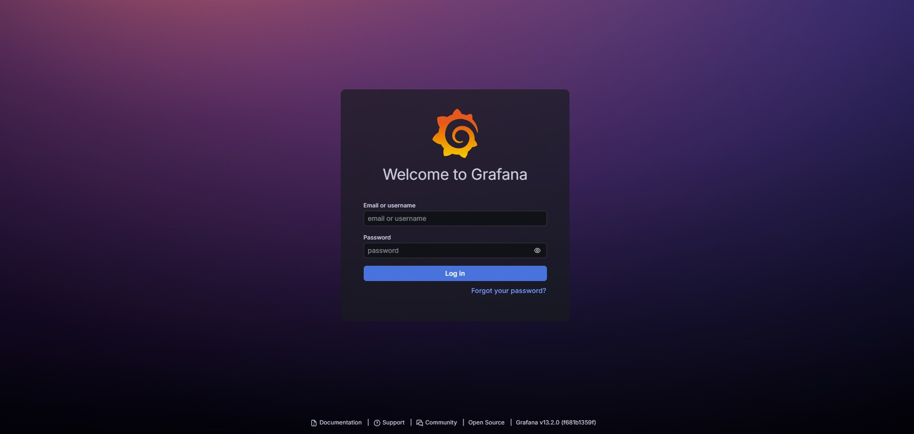
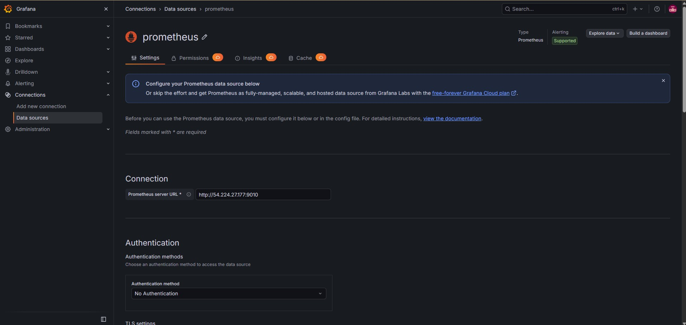
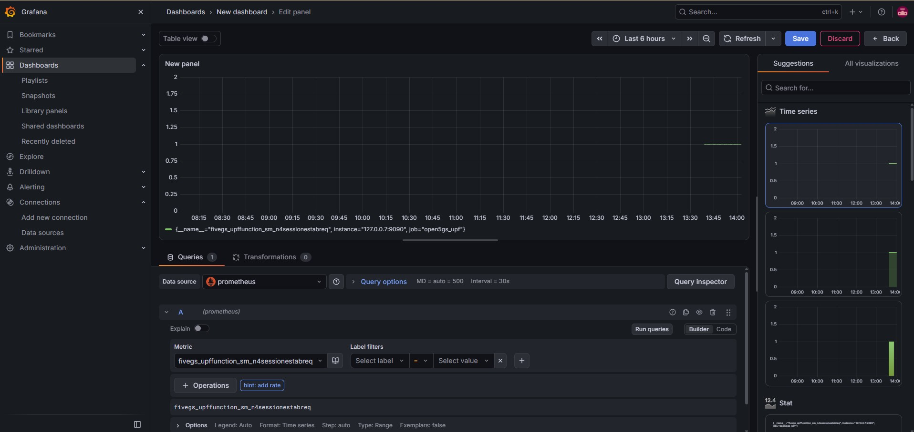
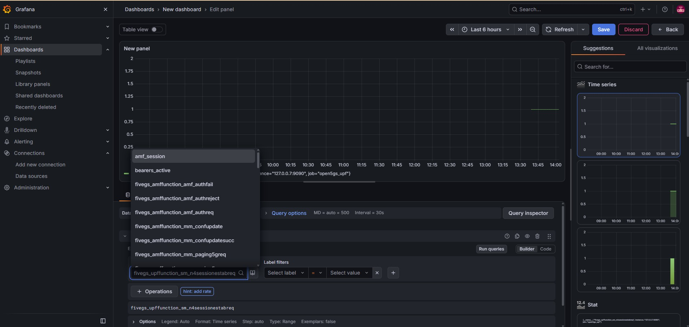

Lab 5 – Integration of Open5GS + Prometheus with Grafana
~The pre‑configured AWS AMI for this lab is available to share. For details, see the About page.~
This lab extends the work from Lab 1 and Lab 4 by connecting Prometheus (your metrics collector) with Grafana (your visualization platform). By the end of this lab, you will have a working monitoring stack capable of displaying real‑time Open5GS metrics.
1. Overview
Prometheus scrapes metrics from Open5GS network functions (AMF, SMF, UPF) and stores them as time‑series data. Grafana reads these metrics and visualizes them using dashboards and panels.
In this lab, you will:
Verify Prometheus is scraping Open5GS metrics
Add Prometheus as a data source in Grafana
Explore available metrics
Build your first simple visualization
2. Verify Prometheus Metrics
Before integrating Grafana, confirm Prometheus is collecting metrics.
Open Prometheus in your browser:
http://<prometheus-ip>:9090
3. Install grafana
Grafana is the visualization layer of our monitoring stack. In this lab, we install Grafana on Ubuntu and prepare it to connect to Prometheus. The following commands add the official Grafana repository, install the server package, and enable the service so it starts automatically.
sudo apt-get install -y apt-transport-https software-properties-common
sudo wget -q -O /usr/share/keyrings/grafana.key https://apt.grafana.com/gpg.key
echo "deb [signed-by=/usr/share/keyrings/grafana.key] https://apt.grafana.com stable main" | sudo tee /etc/apt/sources.list.d/grafana.list
sudo apt-get update
sudo apt-get install grafana
sudo systemctl enable --now grafana-server
4. Opening port 3000 on AWS EC2
We need to open port 3000 on EC2 FW and then try to browse:
http://<grafana-ip>:3000
{kind=link}

5. Add Prometheus as a Data Source in Grafana
Navigate to:
Connections → Data Sources → Add data source
Select Prometheus.
Set the URL:
http://<prometheus-ip>:9010
{kind=link}

6. Create Your First Visualization
Create a new dashboard:
Dashboards → New → New dashboard
Click Add panel.
Under Query A, paste a metric such as: fivegs_upffunction_sm_n4sessionestabreq
Grafana will immediately show a time‑series graph of N4 UPF session.
{kind=link}

This displays the rate of N4 session establishment requests over time.
Click Apply, then Save dashboard.
7. Summary
At this point, your monitoring stack is fully integrated:
Prometheus scrapes Open5GS metrics
Grafana visualizes them
You can explore metrics and build dashboards.
{kind=link}
